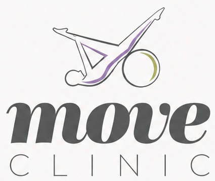
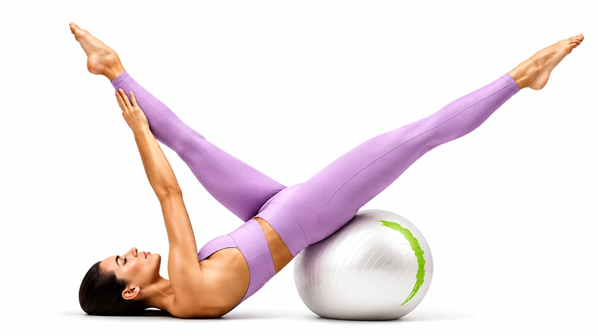
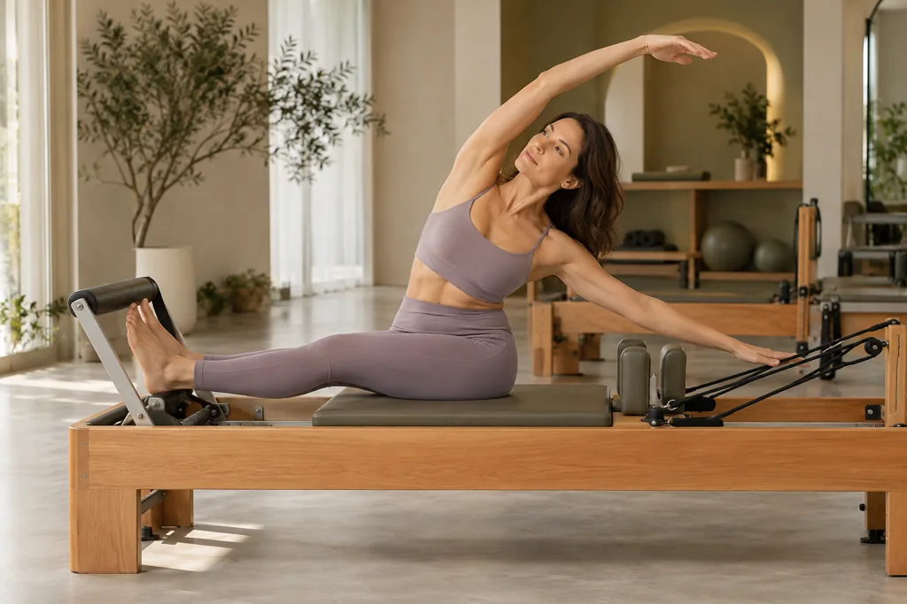
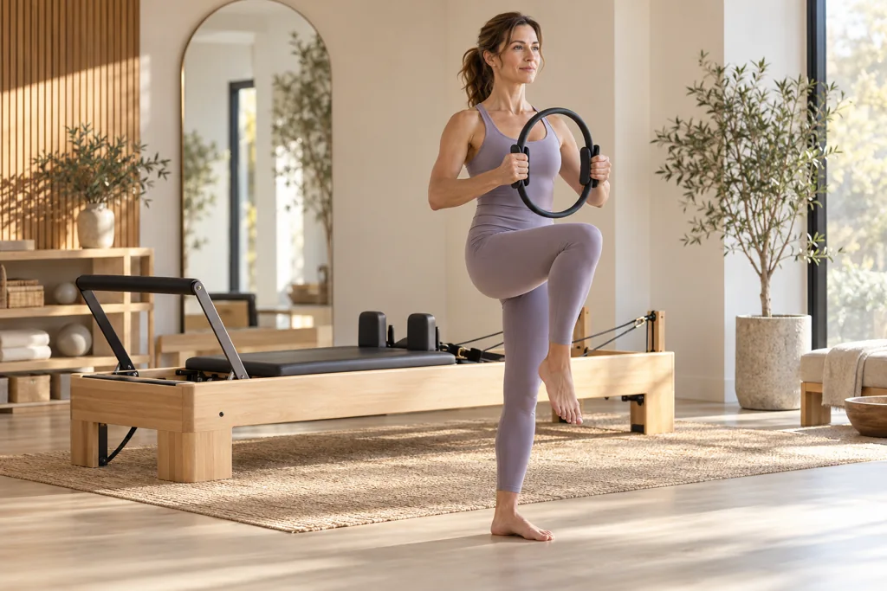
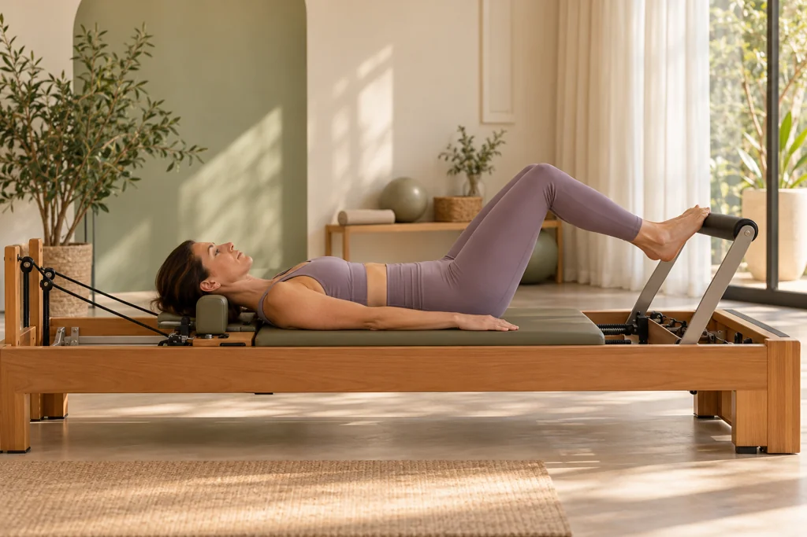
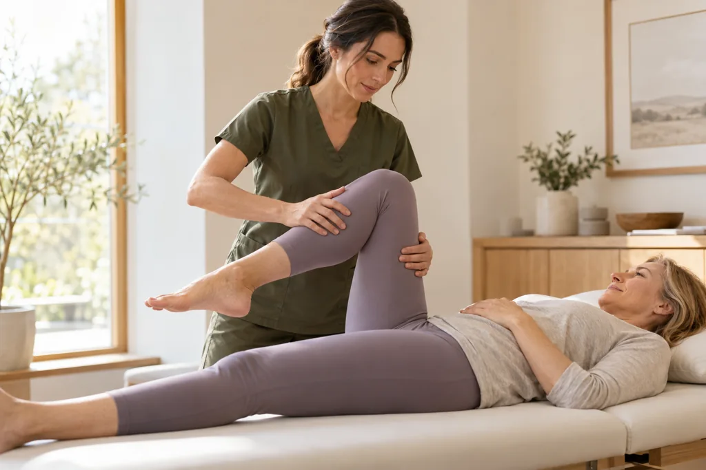
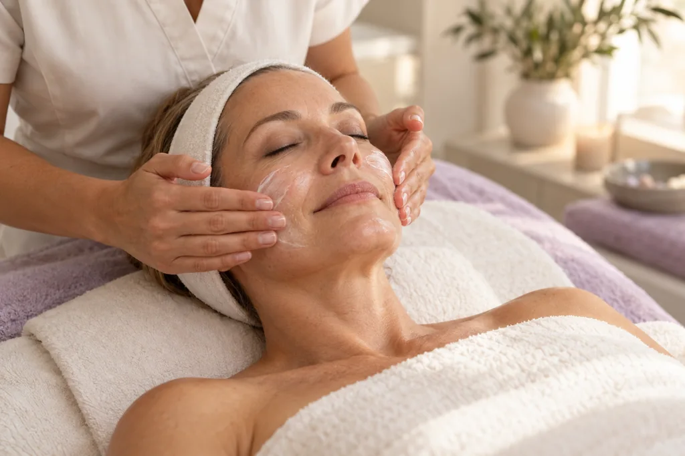
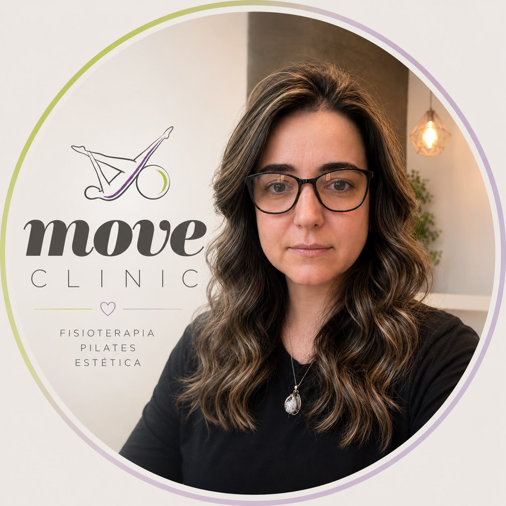

Perceber o corpo.
Respeitar o seu ritmo.
Força, equilíbrio e consciência corporal, respeitando o seu ritmo.

Vamos conversar ↗
SAÚDE · MOVIMENTO · BEM-ESTAR
Seu corpo em movimento.
Sua vida em equilíbrio.
Fisioterapia, Pilates, estética e acupuntura.
Um cuidado que começa por você.
A VIDA ACONTECE EM MOVIMENTO
Saúde, movimento e autocuidado se encontram em um atendimento personalizado, humano e acolhedor.
Conheça o PilatesPILATES / MOVE CLINIC



Força, equilíbrio e consciência corporal, respeitando o seu ritmo.
Seu corpo em movimento. Sua vida em equilíbrio.
Um olhar individual para você, com atenção e acolhimento.

01 / FISIOTERAPIA
Cuidado individualizado para a saúde e o movimento do corpo.

02 / ESTÉTICA FACIAL E CORPORAL
Um momento de atenção e cuidado dedicado à sua pele.
UM UNIVERSO DE CUIDADO
03 / ACUPUNTURA
Acupuntura auricular e sistêmica, com a atenção individual que faz parte da Move Clinic.
Converse com a Pri01 / A NOSSA ESSÊNCIA
Acreditamos que viver bem começa com um cuidado que respeita a sua história, o seu ritmo e as suas necessidades.
Na Move Clinic, saúde, movimento e autocuidado se encontram em um atendimento personalizado, humano e acolhedor, em Ribeirão Preto.
Encontre o cuidado para você ↗
CONHEÇA A PRISCILA
Poder voltar a fazer o que se ama. Reservar um tempo para si. Sentir-se bem no próprio corpo. É nas pequenas coisas da vida que o cuidado ganha sentido.
A trajetória de Priscila Calderero reúne a graduação pela Unaerp, de 1997 a 2000, a especialização em acupuntura, de 2005 a 2007, e a formação em Pilates, em 2012. Conhecimentos que se encontram na proposta da Move Clinic: olhar para cada pessoa de forma individual, com atenção e acolhimento.
Por trás de cada atendimento, existe uma pessoa com uma história, um ritmo e um desejo de viver melhor. Aqui, o convite é encontrar espaço para cuidar de você — com carinho em cada passo.
03 / CONVÊNIOS
Fale com a equipe para consultar modalidades,
planos aceitos e disponibilidade de horários.
VENHA CUIDAR DE VOCÊ
Na Nova Ribeirânia, em Ribeirão Preto.
Um espaço para você se sentir acolhida.
PLANEJE SUA VISITA
Domingo: fechado.
Atendimento mediante agendamento.
SEU PRÓXIMO PASSO COMEÇA AQUI
Conte o que você precisa. Vamos encontrar,
juntos, o melhor primeiro passo.